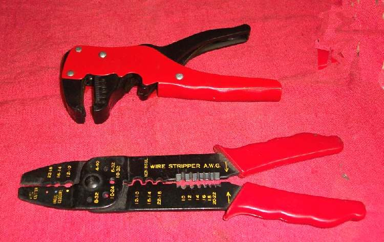

Low beam works, but high beam (main beam) or the flash (pass) button does not, or the reverse. Most headlights use one bulb with two filaments, one for each beam, so the likely causes are one broken filament, the dip switch, or the wire for that one beam. Some bikes switch high beam through a relay, and the blue high-beam lamp on the dashboard gives a useful clue.
Is it safe to ride?
Yes with care, if low beam works. Do not ride at night if low beam is the one that has failed. Make sure the headlight is not stuck on high beam, which dazzles others.
Quick checks first
- Which fails: high beam, low beam, or the flash button only?
- Does the blue high-beam lamp on the dashboard come on when you select high beam?
- Does the headlight go fully dark when you switch to the beam that fails, or stay on the other beam?
- Is the dip switch loose, sticky or wet?
Diagnose it step by step
1. Is one filament broken? Remove the headlight bulb (Replace a bulb). On a three-pin bulb such as the H4 used on the K-Light 125 (PDF p. 98), set the multimeter to continuity (beep symbol). Probe the earth pin and each of the other two pins in turn.
- One pair does not beep: that filament is broken. Replace the bulb.
- Both beep: the bulb is good. Go to step 2.
2. Does the dashboard high-beam lamp come on? Key on, select high beam.
- Yes, but the headlight high beam is dark: the switch is sending power, so the fault is between the dashboard branch and the bulb, usually the headlight plug or a high-beam relay. Go to step 4.
- No: go to step 3.
3. Does the dip switch work? Key off. Unplug the left switch connector. Meter on continuity. On the K-Light 125, high beam joins yellow and blue, and low beam joins light blue and yellow (PDF p. 105). Select each position and probe the matching pair. Press the flash (PASS) button and check its contacts too (the K-Light diagram shows a PASS contact in the headlamp switch, PDF p. 278).
- No beep in a position: Clean a handlebar switch.
- All positions good: go to step 4.
4. Is power reaching the bulb plug? Plug off the bulb. Key on, engine running if your headlight needs it. Meter on DC volts (V with a straight line), black probe on frame metal, red probe on the high beam pin of the plug, high beam selected.
- Close to battery voltage: power is there. The plug contact is bad: Clean and seal electrical connectors.
- 0: the high beam wire, a high beam relay or fuse is open. Check relays and fuses with Check fuses and relays, then follow the wire with Test a lighting circuit.
5. LED headlight unit? Many LED units have separate inputs for each beam. If power and earth reach the unit and one beam stays dark, the unit has failed. Replace it.
Causes, most likely first
| Cause | How to confirm | Fix |
|---|---|---|
| One bulb filament broken | No continuity on one pair | Replace a bulb |
| Dirty dip or flash switch contacts | No continuity in that position | Clean a handlebar switch |
| Burnt or loose headlight plug pin | Power at wire, poor contact | Clean and seal electrical connectors |
| High beam relay or fuse (where fitted) | No click, no power | Check fuses and relays |
| Broken high beam wire | No continuity along wire | Test a lighting circuit |
| Failed LED unit | Power present, beam dark | Replace unit |
Reference values (K-Light 125)
| Item | Value | Source |
|---|---|---|
| Headlight bulb | H4 | PDF p. 98 |
| High beam switch contacts | yellow to blue | PDF p. 105 |
| Low beam switch contacts | light blue to yellow | PDF p. 105 |